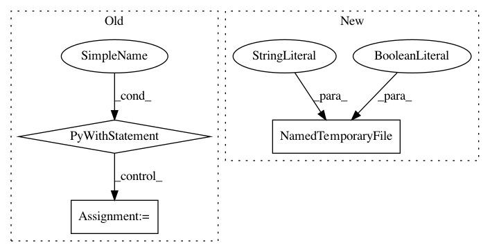

d82d33ff2716a3c97a9a8349e8e236ed35bd8a9e,tests/test_core.py,,test_json_ready_models,#,689
Before Change
if True:
import json
path = "/tmp/models.json"
with open(path, "w") as outfile:
json.dump(j, outfile, indent=2)
After Change
assert len(m["clusters"]) > 0
// This is handy debugging code (lets you look at the model)
// that can be enabled manually when needed.
with tempfile.NamedTemporaryFile(
prefix="bayeslite-models", delete=False) as f:
json.dump(j, f, indent=2)
In pattern: SUPERPATTERN
Frequency: 3
Non-data size: 3
Instances
Project Name: probcomp/bayeslite
Commit Name: d82d33ff2716a3c97a9a8349e8e236ed35bd8a9e
Time: 2019-12-13
Author: fsaad@mit.edu
File Name: tests/test_core.py
Class Name:
Method Name: test_json_ready_models
Project Name: tensorflow/minigo
Commit Name: c3c26e950e8893b2872e4430a1e39c5fc0739954
Time: 2019-10-25
Author: tmadams@google.com
File Name: dual_net.py
Class Name:
Method Name: freeze_graph
Project Name: lanpa/tensorboardX
Commit Name: bf8c6795779fbf225a6bbfefb5a53f9191e7440e
Time: 2019-05-13
Author: huang.dexter@gmail.com
File Name: tensorboardX/summary.py
Class Name:
Method Name: make_video